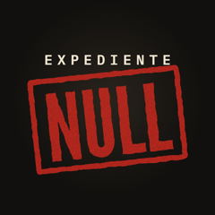

Expediente NullCréditos
James Howells: el hombre que tiró 8.000 bitcoins a la basura
Fotografías
- Sentencia Howells v Newport City Council [2025] EWHC 22 (Ch), pag. 1 — High Court of England and Wales (National Archives) · Material del caso (cita) · origen
- Sentencia Howells v Newport, pag. 5 — High Court of England and Wales (National Archives) · Material del caso (cita) · origen
- Sentencia Howells v Newport, pag. 6 — High Court of England and Wales (National Archives) · Material del caso (cita) · origen
- Sentencia Howells v Newport, pag. 7 — High Court of England and Wales (National Archives) · Material del caso (cita) · origen
- Sentencia Howells v Newport, pag. 8 — High Court of England and Wales (National Archives) · Material del caso (cita) · origen
- Sentencia Howells v Newport, pag. 10 — High Court of England and Wales (National Archives) · Material del caso (cita) · origen
- Sentencia Howells v Newport, pag. 21 — High Court of England and Wales (National Archives) · Material del caso (cita) · origen
- Sentencia Howells v Newport, pag. 11 — High Court of England and Wales (National Archives) · Material del caso (cita) · origen
- Sentencia Howells v Newport, pag. 12 — High Court of England and Wales (National Archives) · Material del caso (cita) · origen
- Sentencia Howells v Newport, pag. 20 — High Court of England and Wales (National Archives) · Material del caso (cita) · origen
- Titular de The Guardian, 27 nov 2013 — The Guardian · Material del caso (cita) · origen
- Titular de BBC News, 28 nov 2013 — BBC News · Material del caso (cita) · origen
- Titular de NBC News, 29 nov 2013 — NBC News · Material del caso (cita) · origen
- Titular de CNBC, 15 ene 2021 — CNBC · Material del caso (cita) · origen
- Titular de The Register, 11 feb 2025 — The Register · Material del caso (cita) · origen
- Titular de The Block, 5 ago 2025 — The Block · Material del caso (cita) · origen
- Titular del cierre del vertedero, 6 feb 2025 — Caerphilly Observer / Local Democracy Reporting Service · Material del caso (cita) · origen
- Ficha de la sentencia en National Archives — The National Archives (UK) · Material del caso (cita) · origen
- Control of Pollution Act 1974, seccion 14 — legislation.gov.uk · Material del caso (cita) · origen
- Aviso de licitacion del sellado del vertedero, 2025 — Newport City Council / Find a Tender · Material del caso (cita) · origen
- Satoshi Nakamoto, Bitcoin: A Peer-to-Peer Electronic Cash System, 2008, pag. 1 — Satoshi Nakamoto / bitcoin.org · Material del caso (cita) · origen
- Docks Way eastwards, Newport - geograph.org.uk - 1493442.jpg — John Grayson · CC BY-SA 2.0 · Wikimedia Commons
- Eastern end of Docks Way, Newport - geograph.org.uk - 4068477.jpg — Jaggery · CC BY-SA 2.0 · Wikimedia Commons
- Docks Way directions sign, Newport - geograph.org.uk - 5234442.jpg — Jaggery · CC BY-SA 2.0 · Wikimedia Commons
- Newport Docks entrance, West Way Road, Newport - geograph.org.uk - 1961442.jpg — Jaggery · CC BY-SA 2.0 · Wikimedia Commons
- BD Spot Milan 2022.jpg — Saggittarius A · CC BY-SA 4.0 · Wikimedia Commons
- Spot LKAB.jpg — Bene Riobó · CC BY-SA 4.0 · Wikimedia Commons
- Sentencia Howells v Newport, pag. 2 — High Court of England and Wales (National Archives) · Material del caso (cita) · origen
- Titular CNBC, 20 dic 2017 — CNBC · Material del caso (cita) · origen
- Titular The Block, 25 feb 2025 — The Block · Material del caso (cita) · origen
- Titular Nation.Cymru, 8 ago 2024 — Nation.Cymru · Material del caso (cita) · origen
- Titular Information Age, 14 ene 2021 — Information Age (ACS) · Material del caso (cita) · origen
- Titular Global News, 2 ago 2022 — Global News · Material del caso (cita) · origen
- Titular Decrypt (copia Yahoo), 5 ago 2025 — Decrypt / Yahoo Finanzas · Material del caso (cita) · origen
- Titular de City AM, 14 mar 2025 — City AM · Material del caso (cita) · origen
- Titular de CNN (copia KSL), 14 feb 2025 — CNN / KSL · Material del caso (cita) · origen
- Portada de Forbes Australia, 8 ago 2025 — Forbes Australia · Material del caso (cita) · origen
- Titular de Fortune, 21 nov 2024 — Fortune · Material del caso (cita) · origen
- Satelite de Newport (Docksway), zoom 5 — Sentinel-2 cloudless 2016 by EOX IT Services GmbH (modified Copernicus Sentinel data 2016) · CC BY 4.0 · Wikimedia Commons
- Satelite de Newport (Docksway), zoom 9 — Sentinel-2 cloudless 2016 by EOX IT Services GmbH (modified Copernicus Sentinel data 2016) · CC BY 4.0 · Wikimedia Commons
- Satelite de Newport (Docksway), zoom 13 — Sentinel-2 cloudless 2016 by EOX IT Services GmbH (modified Copernicus Sentinel data 2016) · CC BY 4.0 · Wikimedia Commons


Satélite
- Sentinel-2 cloudless – https://s2maps.eu by EOX IT Services GmbH (Contains modified Copernicus Sentinel data 2016) · CC BY 4.0
Música
- "Lurks" · ELPHNT · Biblioteca de audio de YouTube
- "EBB" · Density & Time · Biblioteca de audio de YouTube
- "Under The Rug" · Density & Time · Biblioteca de audio de YouTube
- "Scanner" · Houses of Heaven · Biblioteca de audio de YouTube
- "Take the Hill" · The Whole Other · Biblioteca de audio de YouTube
- "False Vacuum Decay" · The Grey Room / Density & Time · Biblioteca de audio de YouTube
- "Horizons" · Alex Jones / Xander Jones · Biblioteca de audio de YouTube